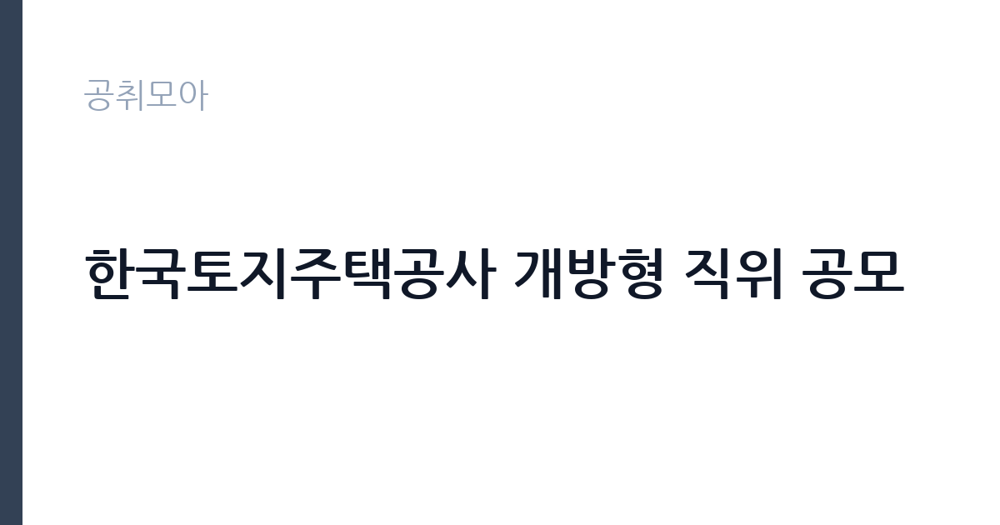

[공공기관] 한국토지주택공사 개방형 직위 공모
한국토지주택공사 · 경남 · 마감 2026-10-07 (D-16) · 출처 잡알리오

한눈에 보는 모집 조건
| 기관 | 한국토지주택공사 |
|---|---|
| 공고명 | 한국토지주택공사 개방형 직위 공모 |
| 고용형태 | 임기제 |
| 근무지 | 경남 |
| 게시일 | 2026-09-22 |
| 마감일 | 2026-10-07 (D-16) |
지원자격, 이렇게 읽으세요
- 공공기관 채용공시
- 세부 조건은 원문 공고문 확인
감사실장 트랙의 응시요건은 감사·수사 경력 공무원의 4급 이상 경력, 공공기관 감사부서 책임자급의 5년 경력, 판사·검사·변호사 5년 경력, 법학 석사 이상과 상장법인 감사부서 책임자 경력 등으로 구성된다. 어느 트랙으로 지원하든 경력증명서의 업무 표기가 감사 관련으로 명확해야 한다. 직위별 세부 요건과 경력 산정 기준은 원문 공고문에서 확정해야 하며, LH 홈페이지(www.lh.or.kr)의 공고 게시판도 함께 확인하는 것이 좋다.
이 공고의 포인트
이 공고는 LH 개혁 흐름과 맞물려 있다는 점에서 읽어야 한다. 새 사장 취임 이후 상임감사와 부사장, 본부장 인사가 이어지는 시기에 감사 라인의 외부 공모가 나왔다는 것은 경영진이 감사 독립성에 무게를 싣겠다는 뜻이다. 감사·법조 경력자에게는 1군 공기업의 감사 책임자급 자리에 오를 수 있는 흔치 않은 기회다. LH 감사실장 자리는 조직 내 위상과 권한이 큰 만큼 검증도 까다롭다.
전형은 어떻게 진행되나
임원급 공모는 임원추천위원회 심사가 중심이다. 서류심사에서 응시요건과 경력의 무게를 보고, 면접심사에서 감사 운영 비전과 독립성을 검증한 뒤, 공공기관운영위원회 심의와 임명 절차로 이어지는 것이 일반적이다. 제출 서류는 이력서와 자기소개서를 넘어 직무수행계획서를 요구하므로 분량과 구성에 시간을 들여야 한다. 세부 절차는 원문 공고문에서 확인해야 한다.
원문에서 확인한 전형 방식
□ 감사실장 ㅇ아래 요건 중 어느 하나에 해당하는 자 - 중앙행정기관 또는 지방자치단체에서 감사·수사 등의 업무(이하 “감사관련 업무”)를 3년 이상 담당한 자로서 4급 이상 또는 이에 상당하는 공무원으로 근무한 경력이 있는 자 또는 감사관련 업무를 5년 이상 담당한 자로서 5급 이상 또는 이에 상당하는 공무원으로 근무한 경력이 있는 자 - 공사를 제외한 「공공기관의 운영에 관한 법률」 제4조에 따른 공공기관, 「지방공기업법」 제49조 또는 제76조에 따른 지방공사 또는 지방공단에서 감사관련 업무 담당부서의 책임자 또는 그 상급자로서 근무한 경력을 포함해 5년 이상 감사관련 업무를 담당한 경력이 있는 자 - 판사ㆍ검사 또는 변호사로서 5년 이상 근무한 경력이 있는 자 - 법률학 석사학위 이상의 학위를 취득한 사람으로서 「자본시장과 금융투자업에 관한 법률」 제9조제15항제3호에 따른 주권상장법인에서 감사관련 업무 담당 부서의 책임자 또는 그 상급자로서 근무한 경력을 포함해 5년 이상 감사관련 업무를 담당한 경력(학위를 취득하기 전의 경력 포함)이 있는 자 □ 준법감시관 ㅇ아래 요건 중 어느 하나에 해당하는 자 - 중앙행정기관 또는
이런 분께 추천해요
- 감사원이나 중앙부처·지자체 감사부서에서 감사 실무를 이끈 고위 공무원 출신
- 공공기관 감사실의 부서장급 이상으로 종합감사를 지휘한 경험자
- 건설·부동산 비위 사건을 다뤄본 법조 경력자나 법학 석사 이상의 상장법인 감사 책임자
지원 전 체크리스트
- 직위별 응시요건 중 본인 해당 호를 확정하고 경력 산정 기준일을 확인한다
- 경력증명서와 재직증명서의 담당 업무가 감사 관련으로 명시됐는지 본다
- 직무수행계획서와 경력기술서의 분량·양식을 원문에서 확인한다
- 접수 마감일(10월 7일)과 접수처(LH 홈페이지·방문·우편)를 원문에서 확인한다
모집 일정과 제출 타이밍
접수는 2026년 10월 7일에 마감된다. 이후 임원추천위원회 심사와 면접, 공운위 심의와 임명 절차를 거치면 실제 취임은 10월 말에서 11월 사이가 되는 흐름이 일반적이다. 임원급 선임은 보안 유지 속에 진행되므로 합격자 발표 방식(개별 통보 등)을 원문에서 확인해야 한다. 지원 서류 준비에 최소 2주 이상을 잡는 것이 안전하다.
직무 이해하기: 공공기관
개방형 감사 책임자는 LH 감사 조직 전체를 이끈다. 연간 감사계획 수립과 종합·특정감사 지휘, 비위 적발 시 처분 요구와 수사의뢰 판단, 외부감사(감사원·국회) 대응이 핵심 업무다. LH는 대규모 보상과 발주, 분양을 다루는 기관이라 감사 수요가 상시로 발생한다. 준법감시 영역까지 포괄한다면 내부통제 체계 설계와 법규 위반 모니터링도 역할에 들어간다. 독립성과 전문성이 동시에 요구되는 고난도 자리다.
자기소개서 작성 팁
직무수행계획서는 이 공고의 승부처다. LH 감사 조직의 현황 진단과 본인의 감사 운영 방향, 중점 감사 분야를 구체적으로 제시해야 한다. 과거에 지휘한 감사 사례는 감사 규모와 적발 실적, 제도 개선 효과까지 수치로 써야 설득력이 있다. 청렴 구호의 나열이 아니라 감사 기법(표본 추출, 데이터 분석 등)과 조직 운영 방안(감사 인력 육성 등)을 담는 것이 전문가다운 서류다.
면접 준비 포인트
면접에서는 감사 독립성과 현안 대응을 묻는다. 경영진의 부당한 압력이 들어오면 어떻게 할 것인지, 대규모 비위 의혹이 터졌을 때 감사 수순을 어떻게 밟을 것인지 같은 질문이 나온다. LH의 최근 이슈에 대한 본인의 진단을 요구받을 수 있으므로, 보도된 사안을 정리하고 감사 책임자로서의 시각을 정돈해야 한다. 정치적 중립성과 원칙을 지키겠다는 태도를 분명히 해야 한다.
급여·근무조건 읽는 법
정확한 보수 조건은 원문 공고문의 보수 항목에서 확인해야 한다. LH 개방형 직위의 보수는 임기제 보수 규정에 따라 협의·결정되는 구조가 일반적이며, 기본연봉에 성과연봉이 더해지고 정액급식비와 직급보조비, 가족수당 같은 연봉 외 급여가 별도 지급되는 방식이다. 중앙부처 개방형 직위 공고 사례에서는 기본연봉 하한선이 6,600만 원 이상으로 제시된 바 있으나(2025년 기준), LH 감사 책임자급의 실제 보수와는 차이가 크므로 원문에서 확인하기 바란다.
자주 묻는 질문
- 개방형 직위란 무엇인가요?
내부 승진이 아니라 외부 전문가에게도 문을 여는 공모 직위다. 공직 안팎 구분 없이 응시요건만 충족하면 지원할 수 있으며, 임기제로 임용된다. - 상임감사와 감사실장은 다른 자리인가요?
상임감사는 이사회 구성원인 임원이며 대통령이 임명하고, 감사실장은 감사 실무 조직의 책임자다. 이번 공모의 직위별 임용권자와 임기는 원문에서 확인해야 한다. - LH 홈페이지에서도 확인해야 하나요?
알리오 공시와 함께 LH 홈페이지 공고 게시판(www.lh.or.kr)에도 게시되는 것이 일반적이다. 양쪽의 공고문을 대조하면 제출 서류 양식을 빠짐없이 챙길 수 있다.
함께 보면 좋은 공고
[공공기관] 한국토지주택공사 개방형 직위(감사실장, 준법감시관) 공모 — 마감 2026-10-07[공공기관] 한국도로공사 비상임이사 공모 — 마감 2026-09-29[공공기관] 2026년 하반기 2차 중소벤처기업진흥공단 체험형 청년인턴(장애인) 채용 공고 — 마감 2026-10-12출처: 잡알리오 공개정보를 바탕으로 공취모아가 정리한 안내글입니다. 모집 조건·일정은 변경될 수 있으니 지원 전 반드시 원문 공고문을 확인하세요. 본 글은 정보 제공용이며 합격을 보장하지 않습니다.